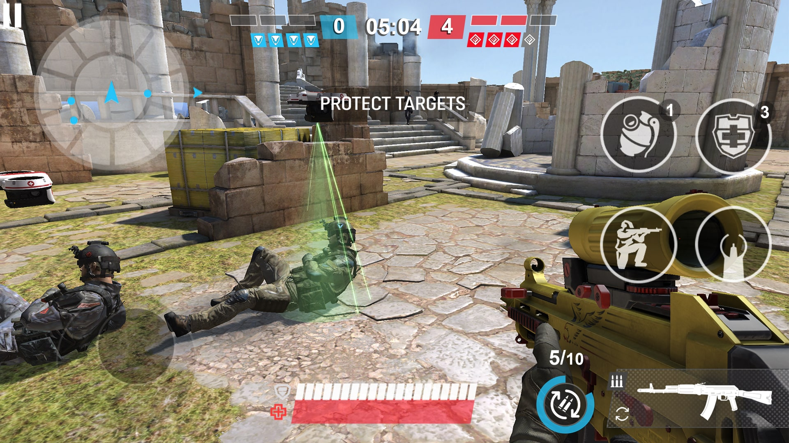

Conheça os principais gêneros
Existem vários tipos de jogos eletrônicos, cada um com suas características. Aqui vou falar sobre os gêneros mais conhecidos e populares entre os jogadores.
São jogos que misturam combate com exploração. O jogador geralmente controla um personagem que precisa completar missões, enfrentar inimigos e descobrir segredos pelo mapa. Exemplos famosos são God of War, The Legend of Zelda e Uncharted.
Esse gênero é um dos mais populares porque agrada muita gente, tanto quem gosta de lutar quanto quem prefere explorar o mundo do jogo.
Nos jogos de RPG, você cria ou assume um personagem e vai evoluindo ele ao longo do jogo. Ganha experiência, sobe de nível, pega equipamentos melhores... é bem viciante. Jogos como Final Fantasy, The Witcher 3 e Elden Ring são exemplos clássicos.
O legal do RPG é que as escolhas do jogador muitas vezes mudam a história, então cada pessoa tem uma experiência diferente.

FPS é a sigla pra First Person Shooter. Nesse tipo de jogo, a câmera fica nos olhos do personagem e o foco é em atirar nos inimigos. Counter-Strike, Call of Duty e Valorant são os mais jogados nessa categoria.
Muitos jogos de FPS têm modo competitivo online, e é nesse gênero que os e-sports mais cresceram nos últimos anos.
Jogos de esporte simulam competições reais, como futebol, basquete e corridas de carro. O FIFA, NBA 2K e Forza Horizon são bem populares nessa categoria.
Esses jogos são ótimos pra jogar com amigos, seja no mesmo sofá ou online.
Um gênero que explodiu nos últimos anos. A ideia é simples: vários jogadores caem num mapa e o último que sobreviver ganha. Fortnite, PUBG e Apex Legends popularizaram esse estilo.
A graça é que cada partida é diferente, porque você nunca sabe onde vai cair e o que vai encontrar pelo caminho.
Na real, não existe gênero melhor ou pior. Depende muito do gosto de cada um. Tem gente que prefere jogos mais calmos e com história, e tem gente que gosta de ação e competição. O importante é se divertir!
Quer saber mais sobre gêneros de jogos? Sugestões de alguns sites: TechTudo